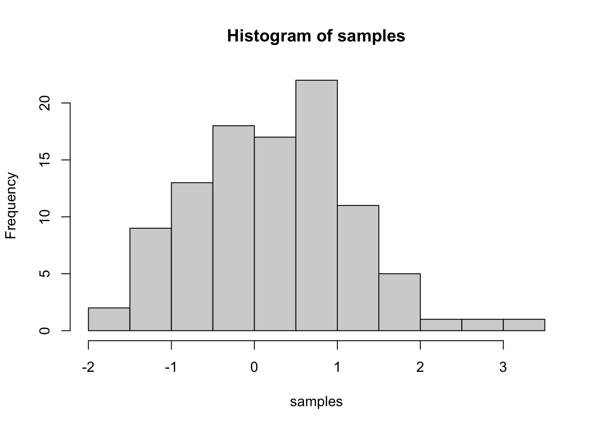
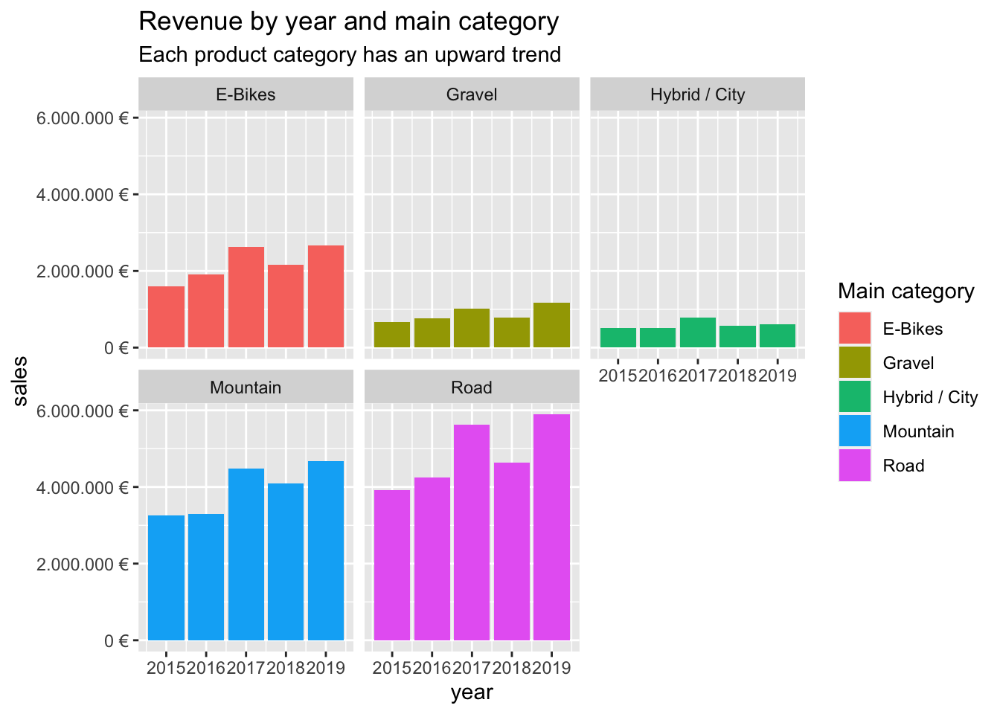

Journal (reproducible report)
Jonathan Zorn
2020-11-05
1 Intro
As I am not quite sure how we are supposed to structure the journal, i will focus on the bigger Exercises and the challanges. The smaller Exercises can be seen below.
2 Bike Sales analysis
Last compiled: 2020-12-02
# Data Science at TUHH ------------------------------------------------------
# SALES ANALYSIS ----
# 1.0 Load libraries ----
library(tidyverse)
library(readxl)
# 2.0 Importing Files ----
bikes_tbl <- read_excel(path = "00_data/01_bike_sales/01_raw_data/bikes.xlsx")
orderlines_tbl <- read_excel("00_data/01_bike_sales/01_raw_data/orderlines.xlsx")
bikeshops_tbl <- read_excel("00_data/01_bike_sales/01_raw_data/bikeshops.xlsx")
# 3.0 Examining Data ----
orderlines_tbl## # A tibble: 15,644 x 7
## ...1 order.id order.line order.date customer.id product.id quantity
## <chr> <dbl> <dbl> <dttm> <dbl> <dbl> <dbl>
## 1 1 1 1 2015-01-07 00:00:00 2 2681 1
## 2 2 1 2 2015-01-07 00:00:00 2 2411 1
## 3 3 2 1 2015-01-10 00:00:00 10 2629 1
## 4 4 2 2 2015-01-10 00:00:00 10 2137 1
## 5 5 3 1 2015-01-10 00:00:00 6 2367 1
## 6 6 3 2 2015-01-10 00:00:00 6 1973 1
## 7 7 3 3 2015-01-10 00:00:00 6 2422 1
## 8 8 3 4 2015-01-10 00:00:00 6 2655 1
## 9 9 3 5 2015-01-10 00:00:00 6 2247 1
## 10 10 4 1 2015-01-11 00:00:00 22 2408 1
## # … with 15,634 more rowsglimpse(bikes_tbl)## Rows: 231
## Columns: 9
## $ bike.id <dbl> 2875, 2873, 2874, 2876, 2877, 2225, 2091, 2086, 2088, …
## $ model <chr> "Aeroad CF SL Disc 8.0 Di2", "Aeroad CF SLX Disc 9.0 E…
## $ model.year <dbl> 2020, 2020, 2020, 2020, 2020, 2019, 2019, 2021, 2020, …
## $ frame.material <chr> "carbon", "carbon", "carbon", "carbon", "carbon", "car…
## $ weight <dbl> 7.60, 7.27, 7.10, 7.73, 7.83, 6.80, 6.80, 7.60, 7.30, …
## $ price <dbl> 4579, 6919, 6429, 5069, 3609, 6139, 5359, 2629, 3699, …
## $ category <chr> "Road - Race - Aeroad", "Road - Race - Aeroad", "Road …
## $ gender <chr> "unisex", "unisex", "unisex", "unisex", "unisex", "uni…
## $ url <chr> "https://www.canyon.com/en-de/road-bikes/race-bikes/ae…# 4.0 Joining Data ----
bike_orderlines_joined_tbl <- orderlines_tbl %>%
left_join(bikes_tbl, by = c("product.id" = "bike.id")) %>%
left_join(bikeshops_tbl, by = c("customer.id" = "bikeshop.id"))
bike_orderlines_joined_tbl %>% glimpse()## Rows: 15,644
## Columns: 19
## $ ...1 <chr> "1", "2", "3", "4", "5", "6", "7", "8", "9", "10", "11…
## $ order.id <dbl> 1, 1, 2, 2, 3, 3, 3, 3, 3, 4, 5, 5, 5, 5, 6, 6, 6, 6, …
## $ order.line <dbl> 1, 2, 1, 2, 1, 2, 3, 4, 5, 1, 1, 2, 3, 4, 1, 2, 3, 4, …
## $ order.date <dttm> 2015-01-07, 2015-01-07, 2015-01-10, 2015-01-10, 2015-…
## $ customer.id <dbl> 2, 2, 10, 10, 6, 6, 6, 6, 6, 22, 8, 8, 8, 8, 16, 16, 1…
## $ product.id <dbl> 2681, 2411, 2629, 2137, 2367, 1973, 2422, 2655, 2247, …
## $ quantity <dbl> 1, 1, 1, 1, 1, 1, 1, 1, 1, 1, 1, 2, 1, 1, 1, 1, 1, 1, …
## $ model <chr> "Spectral CF 7 WMN", "Ultimate CF SLX Disc 8.0 ETAP", …
## $ model.year <dbl> 2021, 2020, 2021, 2019, 2020, 2020, 2020, 2021, 2020, …
## $ frame.material <chr> "carbon", "carbon", "carbon", "carbon", "aluminium", "…
## $ weight <dbl> 13.80, 7.44, 14.06, 8.80, 11.50, 8.80, 8.20, 8.85, 14.…
## $ price <dbl> 3119, 5359, 2729, 1749, 1219, 1359, 2529, 1559, 3899, …
## $ category <chr> "Mountain - Trail - Spectral", "Road - Race - Ultimate…
## $ gender <chr> "female", "unisex", "unisex", "unisex", "unisex", "uni…
## $ url <chr> "https://www.canyon.com/en-de/mountain-bikes/trail-bik…
## $ name <chr> "AlexandeRad", "AlexandeRad", "WITT-RAD", "WITT-RAD", …
## $ location <chr> "Hamburg, Hamburg", "Hamburg, Hamburg", "Bremen, Breme…
## $ lat <dbl> 53.57532, 53.57532, 53.07379, 53.07379, 48.78234, 48.7…
## $ lng <dbl> 10.015340, 10.015340, 8.826754, 8.826754, 9.180819, 9.…# 5.0 Wrangling Data ----
bike_orderlines_joined_tbl %>%
select(category) %>%
filter(str_detect(category, "^Mountain")) %>%
unique()## # A tibble: 10 x 1
## category
## <chr>
## 1 Mountain - Trail - Spectral
## 2 Mountain - Trail - Neuron
## 3 Mountain - Dirt Jump - Stitched
## 4 Mountain - Enduro - Torque
## 5 Mountain - Trail - Grand Canyon
## 6 Mountain - Cross-Country - Lux
## 7 Mountain - Enduro - Strive
## 8 Mountain - Downhill - Sender
## 9 Mountain - Fat Bikes - Dude
## 10 Mountain - Cross-Country - Exceedbike_orderlines_wrangled_tbl <- bike_orderlines_joined_tbl %>%
separate(col = category,
into = c("category.1", "category.2", "category.3"),
sep = " - ") %>%
mutate(total.price = price * quantity) %>%
select(-...1, -gender) %>%
select(-ends_with(".id")) %>%
bind_cols(bike_orderlines_joined_tbl %>% select(order.id)) %>%
select(order.id, contains("order"), contains("model"), contains("category"),
price, quantity, total.price,
everything()) %>%
rename(bikeshop = name) %>%
set_names(names(.) %>% str_replace_all("\\.", "_"))
glimpse(bike_orderlines_wrangled_tbl)## Rows: 15,644
## Columns: 18
## $ order_id <dbl> 1, 1, 2, 2, 3, 3, 3, 3, 3, 4, 5, 5, 5, 5, 6, 6, 6, 6, …
## $ order_line <dbl> 1, 2, 1, 2, 1, 2, 3, 4, 5, 1, 1, 2, 3, 4, 1, 2, 3, 4, …
## $ order_date <dttm> 2015-01-07, 2015-01-07, 2015-01-10, 2015-01-10, 2015-…
## $ model <chr> "Spectral CF 7 WMN", "Ultimate CF SLX Disc 8.0 ETAP", …
## $ model_year <dbl> 2021, 2020, 2021, 2019, 2020, 2020, 2020, 2021, 2020, …
## $ category_1 <chr> "Mountain", "Road", "Mountain", "Road", "Mountain", "H…
## $ category_2 <chr> "Trail", "Race", "Trail", "Triathlon Bike", "Dirt Jump…
## $ category_3 <chr> "Spectral", "Ultimate", "Neuron", "Speedmax", "Stitche…
## $ price <dbl> 3119, 5359, 2729, 1749, 1219, 1359, 2529, 1559, 3899, …
## $ quantity <dbl> 1, 1, 1, 1, 1, 1, 1, 1, 1, 1, 1, 2, 1, 1, 1, 1, 1, 1, …
## $ total_price <dbl> 3119, 5359, 2729, 1749, 1219, 1359, 2529, 1559, 3899, …
## $ frame_material <chr> "carbon", "carbon", "carbon", "carbon", "aluminium", "…
## $ weight <dbl> 13.80, 7.44, 14.06, 8.80, 11.50, 8.80, 8.20, 8.85, 14.…
## $ url <chr> "https://www.canyon.com/en-de/mountain-bikes/trail-bik…
## $ bikeshop <chr> "AlexandeRad", "AlexandeRad", "WITT-RAD", "WITT-RAD", …
## $ location <chr> "Hamburg, Hamburg", "Hamburg, Hamburg", "Bremen, Breme…
## $ lat <dbl> 53.57532, 53.57532, 53.07379, 53.07379, 48.78234, 48.7…
## $ lng <dbl> 10.015340, 10.015340, 8.826754, 8.826754, 9.180819, 9.…# 6.0 Business Insights ----
# 6.1 Sales by Year ----
library(lubridate)
# Step 1 - Manipulate
sales_by_year_tbl <- bike_orderlines_wrangled_tbl %>%
# Select columns
select(order_date, total_price) %>%
# Add year column
mutate(year = year(order_date)) %>%
# Grouping by year and summarizing sales
group_by(year) %>%
summarize(sales = sum(total_price)) %>%
# Optional: Add a column that turns the numbers into a currency format
# (makes it in the plot optically more appealing)
# mutate(sales_text = scales::dollar(sales)) <- Works for dollar values
mutate(sales_text = scales::dollar(sales, big.mark = ".",
decimal.mark = ",",
prefix = "",
suffix = " €"))
sales_by_year_tbl## # A tibble: 5 x 3
## year sales sales_text
## <dbl> <dbl> <chr>
## 1 2015 9930282 9.930.282 €
## 2 2016 10730507 10.730.507 €
## 3 2017 14510291 14.510.291 €
## 4 2018 12241853 12.241.853 €
## 5 2019 15017875 15.017.875 €# 6.1 Sales by Year ----
# Step 2 - Visualize
sales_by_year_tbl %>%
# Setup canvas with the columns year (x-axis) and sales (y-axis)
ggplot(aes(x = year, y = sales)) +
# Geometries
geom_col(fill = "#2DC6D6") + # Use geom_col for a bar plot
geom_label(aes(label = sales_text)) + # Adding labels to the bars
geom_smooth(method = "lm", se = FALSE) + # Adding a trendline
# Formatting
# scale_y_continuous(labels = scales::dollar) + # Change the y-axis.
# Again, we have to adjust it for euro values
scale_y_continuous(labels = scales::dollar_format(big.mark = ".",
decimal.mark = ",",
prefix = "",
suffix = " €")) +
labs(
title = "Revenue by year",
subtitle = "Upward Trend",
x = "Year", # Override defaults for x and y
y = "Revenue"
)
# 6.2 Sales by Year and Category 2 ----
# Step 1 - Manipulate
sales_by_year_cat_1_tbl <- bike_orderlines_wrangled_tbl %>%
# Select columns and add a year
select(order_date, total_price, category_1) %>%
mutate(year = year(order_date)) %>%
# Group by and summarize year and main catgegory
group_by(year, category_1) %>%
summarise(sales = sum(total_price)) %>%
ungroup() %>%
# Format $ Text
mutate(sales_text = scales::dollar(sales, big.mark = ".",
decimal.mark = ",",
prefix = "",
suffix = " €"))
sales_by_year_cat_1_tbl ## # A tibble: 25 x 4
## year category_1 sales sales_text
## <dbl> <chr> <dbl> <chr>
## 1 2015 E-Bikes 1599048 1.599.048 €
## 2 2015 Gravel 663025 663.025 €
## 3 2015 Hybrid / City 502512 502.512 €
## 4 2015 Mountain 3254289 3.254.289 €
## 5 2015 Road 3911408 3.911.408 €
## 6 2016 E-Bikes 1916469 1.916.469 €
## 7 2016 Gravel 768794 768.794 €
## 8 2016 Hybrid / City 512346 512.346 €
## 9 2016 Mountain 3288733 3.288.733 €
## 10 2016 Road 4244165 4.244.165 €
## # … with 15 more rows# Step 2 - Visualize
sales_by_year_cat_1_tbl %>%
# Set up x, y, fill
ggplot(aes(x = year, y = sales, fill = category_1)) +
# Geometries
geom_col() + # Run up to here to get a stacked bar plot
# Facet
facet_wrap(~ category_1) +
# Formatting
scale_y_continuous(labels = scales::dollar_format(big.mark = ".",
decimal.mark = ",",
prefix = "",
suffix = " €")) +
labs(
title = "Revenue by year and main category",
subtitle = "Each product category has an upward trend",
fill = "Main category" # Changes the legend name
)
# 7.0 Writing Files ----
# 7.1 Excel ----
#install.packages("writexl")
library("writexl")
bike_orderlines_wrangled_tbl %>%
write_xlsx("00_data/01_bike_sales/02_wrangled_data/bike_orderlines.xlsx")
# 7.2 CSV ----
bike_orderlines_wrangled_tbl %>%
write_csv("00_data/01_bike_sales/02_wrangled_data/bike_orderlines.csv")
# 7.3 RDS ----
bike_orderlines_wrangled_tbl %>%
write_rds("00_data/01_bike_sales/02_wrangled_data/bike_orderlines.rds")2.1 Challenge
# Data Science at TUHH ------------------------------------------------------
# SALES ANALYSIS ----
# 1.0 Load libraries ----
library(tidyverse)
library(readxl)
# 2.0 Importing Files ----
bikes_tbl <- read_excel(path = "00_data/01_bike_sales/01_raw_data/bikes.xlsx")
orderlines_tbl <- read_excel("00_data/01_bike_sales/01_raw_data/orderlines.xlsx")
bikeshops_tbl <- read_excel("00_data/01_bike_sales/01_raw_data/bikeshops.xlsx")
# 4.0 Joining Data ----
bike_orderlines_joined_tbl <- orderlines_tbl %>%
left_join(bikes_tbl, by = c("product.id" = "bike.id")) %>%
left_join(bikeshops_tbl, by = c("customer.id" = "bikeshop.id"))
bike_orderlines_joined_tbl %>% glimpse()## Rows: 15,644
## Columns: 19
## $ ...1 <chr> "1", "2", "3", "4", "5", "6", "7", "8", "9", "10", "11…
## $ order.id <dbl> 1, 1, 2, 2, 3, 3, 3, 3, 3, 4, 5, 5, 5, 5, 6, 6, 6, 6, …
## $ order.line <dbl> 1, 2, 1, 2, 1, 2, 3, 4, 5, 1, 1, 2, 3, 4, 1, 2, 3, 4, …
## $ order.date <dttm> 2015-01-07, 2015-01-07, 2015-01-10, 2015-01-10, 2015-…
## $ customer.id <dbl> 2, 2, 10, 10, 6, 6, 6, 6, 6, 22, 8, 8, 8, 8, 16, 16, 1…
## $ product.id <dbl> 2681, 2411, 2629, 2137, 2367, 1973, 2422, 2655, 2247, …
## $ quantity <dbl> 1, 1, 1, 1, 1, 1, 1, 1, 1, 1, 1, 2, 1, 1, 1, 1, 1, 1, …
## $ model <chr> "Spectral CF 7 WMN", "Ultimate CF SLX Disc 8.0 ETAP", …
## $ model.year <dbl> 2021, 2020, 2021, 2019, 2020, 2020, 2020, 2021, 2020, …
## $ frame.material <chr> "carbon", "carbon", "carbon", "carbon", "aluminium", "…
## $ weight <dbl> 13.80, 7.44, 14.06, 8.80, 11.50, 8.80, 8.20, 8.85, 14.…
## $ price <dbl> 3119, 5359, 2729, 1749, 1219, 1359, 2529, 1559, 3899, …
## $ category <chr> "Mountain - Trail - Spectral", "Road - Race - Ultimate…
## $ gender <chr> "female", "unisex", "unisex", "unisex", "unisex", "uni…
## $ url <chr> "https://www.canyon.com/en-de/mountain-bikes/trail-bik…
## $ name <chr> "AlexandeRad", "AlexandeRad", "WITT-RAD", "WITT-RAD", …
## $ location <chr> "Hamburg, Hamburg", "Hamburg, Hamburg", "Bremen, Breme…
## $ lat <dbl> 53.57532, 53.57532, 53.07379, 53.07379, 48.78234, 48.7…
## $ lng <dbl> 10.015340, 10.015340, 8.826754, 8.826754, 9.180819, 9.…# 5.0 Wrangling Data ----
bike_orderlines_wrangled_tbl <- bike_orderlines_joined_tbl %>%
separate(col = location,
into = c("city", "state"),
sep = ", ") %>%
mutate(total.price = price * quantity) %>%
select(-...1, -gender) %>%
select(order.id, contains("order"), contains("state"), contains("city"),
price, quantity, total.price,
everything()) %>%
rename(bikeshop = name) %>%
set_names(names(.) %>% str_replace_all("\\.", "_"))
# 6.0 Business Insights ----
# 6.1 Sales by Year ----
library(lubridate)
# Step 1 - Manipulate
sales_by_loc_tbl <- bike_orderlines_wrangled_tbl %>%
# Select columns
select(state, total_price) %>%
# Grouping by year and summarizing sales
group_by(state) %>%
summarize(sales = sum(total_price)) %>%
# Optional: Add a column that turns the numbers into a currency format
# (makes it in the plot optically more appealing)
# mutate(sales_text = scales::dollar(sales)) <- Works for dollar values
mutate(sales_text = scales::dollar(sales, big.mark = ".",
decimal.mark = ",",
prefix = "",
suffix = " €"))
sales_by_loc_tbl## # A tibble: 12 x 3
## state sales sales_text
## <chr> <dbl> <chr>
## 1 Baden-Württemberg 6521090 6.521.090 €
## 2 Bavaria 6742819 6.742.819 €
## 3 Berlin 1128433 1.128.433 €
## 4 Bremen 10653499 10.653.499 €
## 5 Hamburg 3874756 3.874.756 €
## 6 Hesse 1558901 1.558.901 €
## 7 Lower Saxony 4107115 4.107.115 €
## 8 Mecklenburg-Western Pomerania 618974 618.974 €
## 9 North Rhine-Westphalia 21200613 21.200.613 €
## 10 Saxony 2230245 2.230.245 €
## 11 Saxony-Anhalt 569614 569.614 €
## 12 Schleswig-Holstein 3224749 3.224.749 €# 6.1 Sales by Year ----# Step 2 - Visualize
sales_by_loc_tbl %>%
# Setup canvas with the columns year (x-axis) and sales (y-axis)
ggplot(aes(x = state, y = sales)) +
theme(axis.text.x = element_text(angle = 45, hjust = 1))+
# Geometries
geom_col(fill = "#2DC6D6") + # Use geom_col for a bar plot
geom_label(aes(label = sales_text)) + # Adding labels to the bars
# geom_smooth(method = "lm", se = FALSE) + # Adding a trendline
# Formatting
# scale_y_continuous(labels = scales::dollar) + # Change the y-axis.
# Again, we have to adjust it for euro values
scale_y_continuous(labels = scales::dollar_format(big.mark = ".",
decimal.mark = ",",
prefix = "",
suffix = " €")) +
labs(
title = "Revenue by state",
x = "State", # Override defaults for x and y
y = "Revenue"
)
# 6.2 Sales by Year and Category 2 ----
# Step 1 - Manipulate
sales_by_year_loc_tbl <- bike_orderlines_wrangled_tbl %>%
# Select columns and add a year
select(order_date, total_price, state) %>%
mutate(year = year(order_date)) %>%
# Group by and summarize year and main catgegory
group_by(year, state) %>%
summarise(sales = sum(total_price)) %>%
ungroup() %>%
# Format $ Text
mutate(sales_text = scales::dollar(sales, big.mark = ".",
decimal.mark = ",",
prefix = "",
suffix = " €"))
sales_by_year_loc_tbl ## # A tibble: 60 x 4
## year state sales sales_text
## <dbl> <chr> <dbl> <chr>
## 1 2015 Baden-Württemberg 1031924 1.031.924 €
## 2 2015 Bavaria 1301461 1.301.461 €
## 3 2015 Berlin 95853 95.853 €
## 4 2015 Bremen 1395912 1.395.912 €
## 5 2015 Hamburg 423090 423.090 €
## 6 2015 Hesse 308609 308.609 €
## 7 2015 Lower Saxony 584386 584.386 €
## 8 2015 Mecklenburg-Western Pomerania 222003 222.003 €
## 9 2015 North Rhine-Westphalia 3735092 3.735.092 €
## 10 2015 Saxony 238371 238.371 €
## # … with 50 more rows# Step 2 - Visualize
sales_by_year_loc_tbl %>%
# Set up x, y, fill
ggplot(aes(x = year, y = sales, fill = state)) +
# Geometries
geom_col() + # Run up to here to get a stacked bar plot
# Facet
facet_wrap(~ state) +
# Formatting
scale_y_continuous(labels = scales::dollar_format(big.mark = ".",
decimal.mark = ",",
prefix = "",
suffix = " €")) +
labs(
title = "Revenue by year and state",
subtitle = "Each product category has an upward trend",
fill = "State" # Changes the legend name
) Save again and overwrite, not sure how we are supposed to handle that but to be on the save side:
Save again and overwrite, not sure how we are supposed to handle that but to be on the save side:
# 7.0 Writing Files ----
# 7.1 Excel ----
#install.packages("writexl")
library("writexl")
bike_orderlines_wrangled_tbl %>%
write_xlsx("00_data/01_bike_sales/02_wrangled_data/bike_orderlines.xlsx")
# 7.2 CSV ----
bike_orderlines_wrangled_tbl %>%
write_csv("00_data/01_bike_sales/02_wrangled_data/bike_orderlines.csv")
# 7.3 RDS ----
bike_orderlines_wrangled_tbl %>%
write_rds("00_data/01_bike_sales/02_wrangled_data/bike_orderlines.rds")3 Exercise
Here is will just document the Exercises in case that is relevant for the class.
3.1 tidyverse
# This way applies to dataframes and tibbles
vehicles <- as_tibble(cars[1:5,])
vehicles[['speed']]## [1] 4 4 7 7 8vehicles[[1]]## [1] 4 4 7 7 8vehicles$speed## [1] 4 4 7 7 8# Using placeholders with the pipe
vehicles %>% .$dist## [1] 2 10 4 22 16vehicles %>% .[['dist']]## [1] 2 10 4 22 16vehicles %>% .[[2]]## [1] 2 10 4 22 16library(tidyverse)
diamonds2 <- readRDS("Data/diamonds2.rds")
diamonds2 %>% head(n = 5)## # A tibble: 5 x 3
## cut `2008` `2009`
## <chr> <dbl> <dbl>
## 1 Ideal 326 332
## 2 Premium 326 332
## 3 Good 237 333
## 4 Premium 334 340
## 5 Good 335 341diamonds2 %>% pivot_longer(cols = c("2008", "2009"),
names_to = 'year',
values_to = 'price') %>%
head(n = 5)## # A tibble: 5 x 3
## cut year price
## <chr> <chr> <dbl>
## 1 Ideal 2008 326
## 2 Ideal 2009 332
## 3 Premium 2008 326
## 4 Premium 2009 332
## 5 Good 2008 237diamonds3 <- readRDS("Data/diamonds3.rds")
diamonds3 %>% head(n = 5)## # A tibble: 5 x 5
## cut price clarity dimension measurement
## <ord> <dbl> <ord> <chr> <dbl>
## 1 Ideal 326 SI2 x 3.95
## 2 Premium 326 SI1 x 3.89
## 3 Good 327 VS1 x 4.05
## 4 Ideal 326 SI2 y 3.98
## 5 Premium 326 SI1 y 3.84diamonds3 %>%
pivot_wider(names_from = "dimension",
values_from = "measurement") %>%
head(n = 5)## # A tibble: 3 x 6
## cut price clarity x y z
## <ord> <dbl> <ord> <dbl> <dbl> <dbl>
## 1 Ideal 326 SI2 3.95 3.98 2.43
## 2 Premium 326 SI1 3.89 3.84 2.31
## 3 Good 327 VS1 4.05 4.07 2.31diamonds4 <- readRDS("Data/diamonds4.rds")
diamonds4## # A tibble: 5 x 4
## cut price clarity dim
## <ord> <dbl> <ord> <chr>
## 1 Ideal 326 SI2 3.95/3.98/2.43
## 2 Premium 326 SI1 3.89/3.84/2.31
## 3 Good 327 VS1 4.05/4.07/2.31
## 4 Premium 334 VS2 4.2/4.23/2.63
## 5 Good 335 SI2 4.34/4.35/2.75diamonds4 %>%
separate(col = dim,
into = c("x", "y", "z"),
sep = "/",
convert = T)## # A tibble: 5 x 6
## cut price clarity x y z
## <ord> <dbl> <ord> <dbl> <dbl> <dbl>
## 1 Ideal 326 SI2 3.95 3.98 2.43
## 2 Premium 326 SI1 3.89 3.84 2.31
## 3 Good 327 VS1 4.05 4.07 2.31
## 4 Premium 334 VS2 4.2 4.23 2.63
## 5 Good 335 SI2 4.34 4.35 2.75diamonds5 <- readRDS("Data/diamonds5.rds")
diamonds5## # A tibble: 5 x 7
## cut price clarity_prefix clarity_suffix x y z
## <ord> <dbl> <chr> <chr> <dbl> <dbl> <dbl>
## 1 Ideal 326 SI 2 3.95 3.98 2.43
## 2 Premium 326 SI 1 3.89 3.84 2.31
## 3 Good 327 VS 1 4.05 4.07 2.31
## 4 Premium 334 VS 2 4.2 4.23 2.63
## 5 Good 335 SI 2 4.34 4.35 2.75diamonds5 %>%
unite(clarity, clarity_prefix, clarity_suffix, sep = '')## # A tibble: 5 x 6
## cut price clarity x y z
## <ord> <dbl> <chr> <dbl> <dbl> <dbl>
## 1 Ideal 326 SI2 3.95 3.98 2.43
## 2 Premium 326 SI1 3.89 3.84 2.31
## 3 Good 327 VS1 4.05 4.07 2.31
## 4 Premium 334 VS2 4.2 4.23 2.63
## 5 Good 335 SI2 4.34 4.35 2.75library(ggplot2) # To load the diamonds dataset
library(dplyr)
diamonds %>%
filter(cut == 'Ideal' | cut == 'Premium', carat >= 0.23) %>%
head(5)## # A tibble: 5 x 10
## carat cut color clarity depth table price x y z
## <dbl> <ord> <ord> <ord> <dbl> <dbl> <int> <dbl> <dbl> <dbl>
## 1 0.23 Ideal E SI2 61.5 55 326 3.95 3.98 2.43
## 2 0.290 Premium I VS2 62.4 58 334 4.2 4.23 2.63
## 3 0.23 Ideal J VS1 62.8 56 340 3.93 3.9 2.46
## 4 0.31 Ideal J SI2 62.2 54 344 4.35 4.37 2.71
## 5 0.32 Premium E I1 60.9 58 345 4.38 4.42 2.68diamonds %>%
filter(cut == 'Ideal' | cut == 'Premium', carat >= 0.23) %>%
slice(3:4)## # A tibble: 2 x 10
## carat cut color clarity depth table price x y z
## <dbl> <ord> <ord> <ord> <dbl> <dbl> <int> <dbl> <dbl> <dbl>
## 1 0.23 Ideal J VS1 62.8 56 340 3.93 3.9 2.46
## 2 0.31 Ideal J SI2 62.2 54 344 4.35 4.37 2.71diamonds %>%
arrange(cut, carat, desc(price))## # A tibble: 53,940 x 10
## carat cut color clarity depth table price x y z
## <dbl> <ord> <ord> <ord> <dbl> <dbl> <int> <dbl> <dbl> <dbl>
## 1 0.22 Fair E VS2 65.1 61 337 3.87 3.78 2.49
## 2 0.23 Fair G VVS2 61.4 66 369 3.87 3.91 2.39
## 3 0.25 Fair F SI2 54.4 64 1013 4.3 4.23 2.32
## 4 0.25 Fair D VS1 61.2 55 563 4.09 4.11 2.51
## 5 0.25 Fair E VS1 55.2 64 361 4.21 4.23 2.33
## 6 0.27 Fair E VS1 66.4 58 371 3.99 4.02 2.66
## 7 0.290 Fair F SI1 55.8 60 1776 4.48 4.41 2.48
## 8 0.290 Fair D VS2 64.7 62 592 4.14 4.11 2.67
## 9 0.3 Fair D IF 60.5 57 1208 4.47 4.35 2.67
## 10 0.3 Fair E VVS2 51 67 945 4.67 4.62 2.37
## # … with 53,930 more rowsdiamonds %>%
select(color, clarity, x:z) %>%
head(n = 5)## # A tibble: 5 x 5
## color clarity x y z
## <ord> <ord> <dbl> <dbl> <dbl>
## 1 E SI2 3.95 3.98 2.43
## 2 E SI1 3.89 3.84 2.31
## 3 E VS1 4.05 4.07 2.31
## 4 I VS2 4.2 4.23 2.63
## 5 J SI2 4.34 4.35 2.75diamonds %>%
select(-(x:z)) %>%
head(n = 5)## # A tibble: 5 x 7
## carat cut color clarity depth table price
## <dbl> <ord> <ord> <ord> <dbl> <dbl> <int>
## 1 0.23 Ideal E SI2 61.5 55 326
## 2 0.21 Premium E SI1 59.8 61 326
## 3 0.23 Good E VS1 56.9 65 327
## 4 0.290 Premium I VS2 62.4 58 334
## 5 0.31 Good J SI2 63.3 58 335diamonds %>%
select(x:z, everything()) %>%
head(n = 5)## # A tibble: 5 x 10
## x y z carat cut color clarity depth table price
## <dbl> <dbl> <dbl> <dbl> <ord> <ord> <ord> <dbl> <dbl> <int>
## 1 3.95 3.98 2.43 0.23 Ideal E SI2 61.5 55 326
## 2 3.89 3.84 2.31 0.21 Premium E SI1 59.8 61 326
## 3 4.05 4.07 2.31 0.23 Good E VS1 56.9 65 327
## 4 4.2 4.23 2.63 0.290 Premium I VS2 62.4 58 334
## 5 4.34 4.35 2.75 0.31 Good J SI2 63.3 58 335diamonds %>%
rename(var_x = x) %>%
head(n = 5)## # A tibble: 5 x 10
## carat cut color clarity depth table price var_x y z
## <dbl> <ord> <ord> <ord> <dbl> <dbl> <int> <dbl> <dbl> <dbl>
## 1 0.23 Ideal E SI2 61.5 55 326 3.95 3.98 2.43
## 2 0.21 Premium E SI1 59.8 61 326 3.89 3.84 2.31
## 3 0.23 Good E VS1 56.9 65 327 4.05 4.07 2.31
## 4 0.290 Premium I VS2 62.4 58 334 4.2 4.23 2.63
## 5 0.31 Good J SI2 63.3 58 335 4.34 4.35 2.75diamonds %>%
mutate(p = x + z, q = p + y) %>%
select(-(depth:price)) %>%
head(n = 5)## # A tibble: 5 x 9
## carat cut color clarity x y z p q
## <dbl> <ord> <ord> <ord> <dbl> <dbl> <dbl> <dbl> <dbl>
## 1 0.23 Ideal E SI2 3.95 3.98 2.43 6.38 10.4
## 2 0.21 Premium E SI1 3.89 3.84 2.31 6.2 10.0
## 3 0.23 Good E VS1 4.05 4.07 2.31 6.36 10.4
## 4 0.290 Premium I VS2 4.2 4.23 2.63 6.83 11.1
## 5 0.31 Good J SI2 4.34 4.35 2.75 7.09 11.4diamonds %>%
transmute(carat, cut, sum = x + y + z) %>%
head(n = 5)## # A tibble: 5 x 3
## carat cut sum
## <dbl> <ord> <dbl>
## 1 0.23 Ideal 10.4
## 2 0.21 Premium 10.0
## 3 0.23 Good 10.4
## 4 0.290 Premium 11.1
## 5 0.31 Good 11.4diamonds %>%
group_by(cut) %>%
summarize(max_price = max(price),
mean_price = mean(price),
min_price = min(price))## # A tibble: 5 x 4
## cut max_price mean_price min_price
## <ord> <int> <dbl> <int>
## 1 Fair 18574 4359. 337
## 2 Good 18788 3929. 327
## 3 Very Good 18818 3982. 336
## 4 Premium 18823 4584. 326
## 5 Ideal 18806 3458. 326glimpse(diamonds)## Rows: 53,940
## Columns: 10
## $ carat <dbl> 0.23, 0.21, 0.23, 0.29, 0.31, 0.24, 0.24, 0.26, 0.22, 0.23, 0…
## $ cut <ord> Ideal, Premium, Good, Premium, Good, Very Good, Very Good, Ve…
## $ color <ord> E, E, E, I, J, J, I, H, E, H, J, J, F, J, E, E, I, J, J, J, I…
## $ clarity <ord> SI2, SI1, VS1, VS2, SI2, VVS2, VVS1, SI1, VS2, VS1, SI1, VS1,…
## $ depth <dbl> 61.5, 59.8, 56.9, 62.4, 63.3, 62.8, 62.3, 61.9, 65.1, 59.4, 6…
## $ table <dbl> 55, 61, 65, 58, 58, 57, 57, 55, 61, 61, 55, 56, 61, 54, 62, 5…
## $ price <int> 326, 326, 327, 334, 335, 336, 336, 337, 337, 338, 339, 340, 3…
## $ x <dbl> 3.95, 3.89, 4.05, 4.20, 4.34, 3.94, 3.95, 4.07, 3.87, 4.00, 4…
## $ y <dbl> 3.98, 3.84, 4.07, 4.23, 4.35, 3.96, 3.98, 4.11, 3.78, 4.05, 4…
## $ z <dbl> 2.43, 2.31, 2.31, 2.63, 2.75, 2.48, 2.47, 2.53, 2.49, 2.39, 2…library(lubridate)
ymd(20101215)## [1] "2010-12-15"mdy("4/1/17")## [1] "2017-04-01"bday <- dmy("14/10/1979")
month(bday)## [1] 10year(bday)## [1] 1979